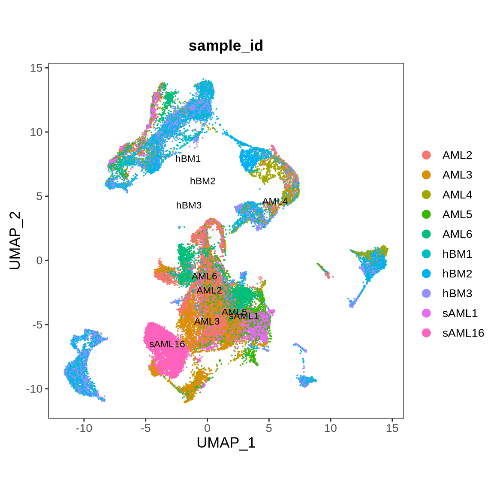
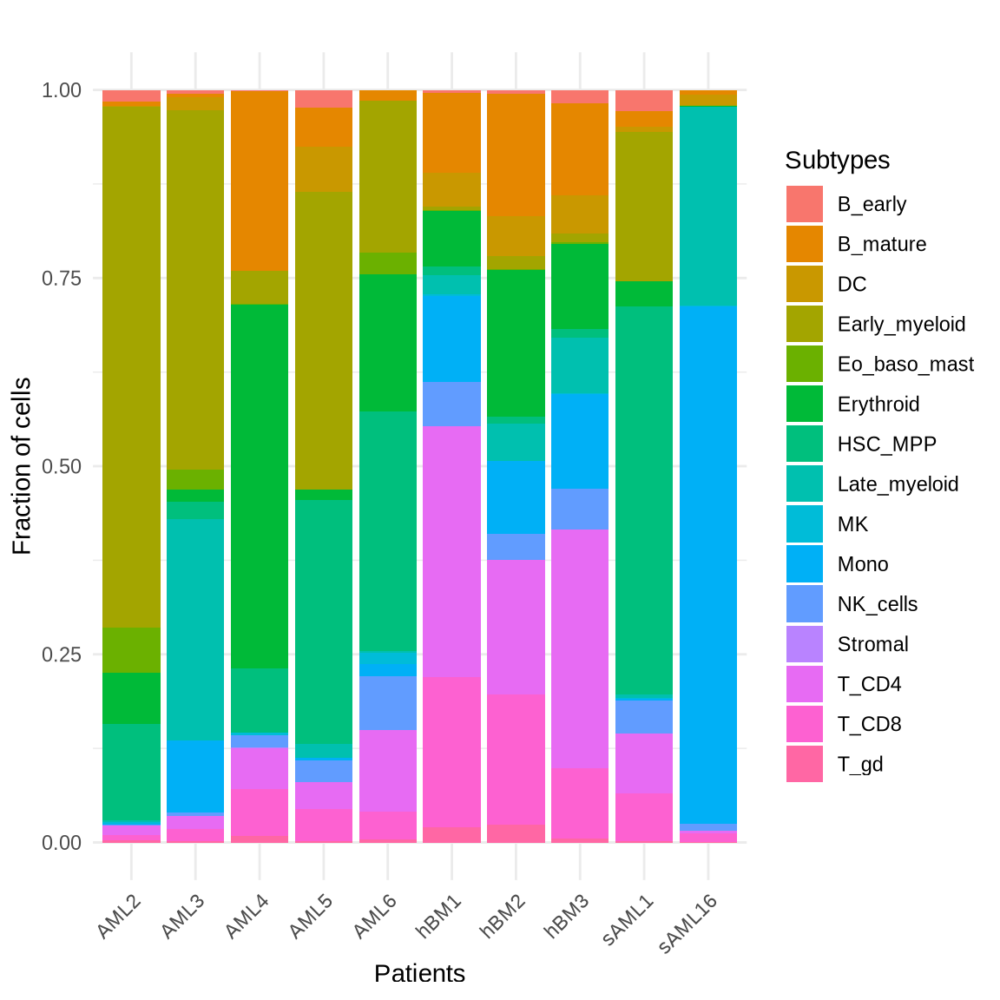
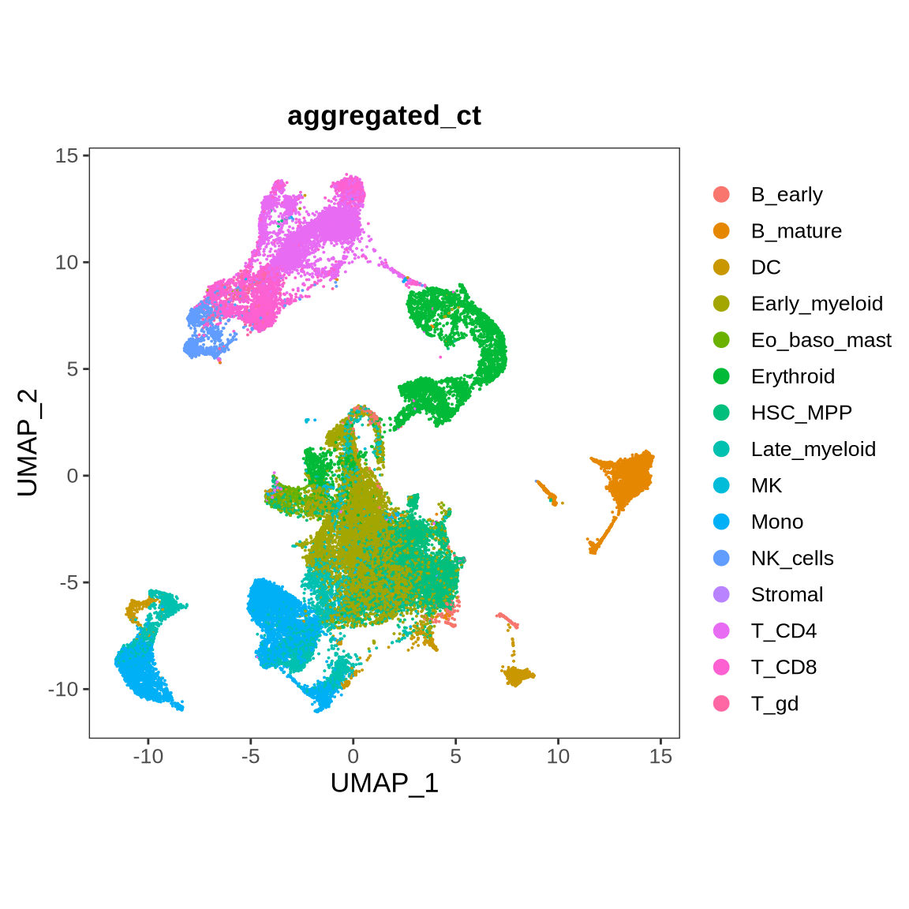
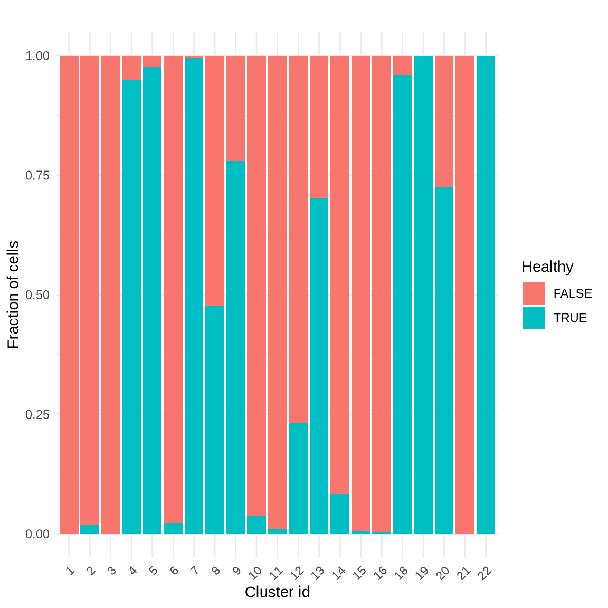
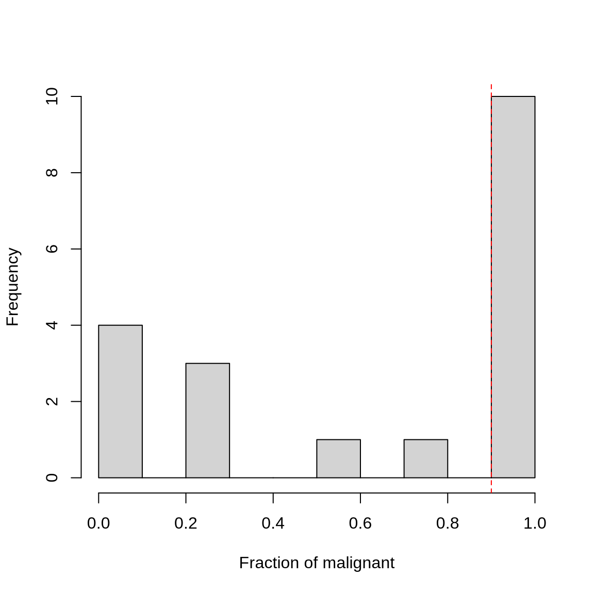
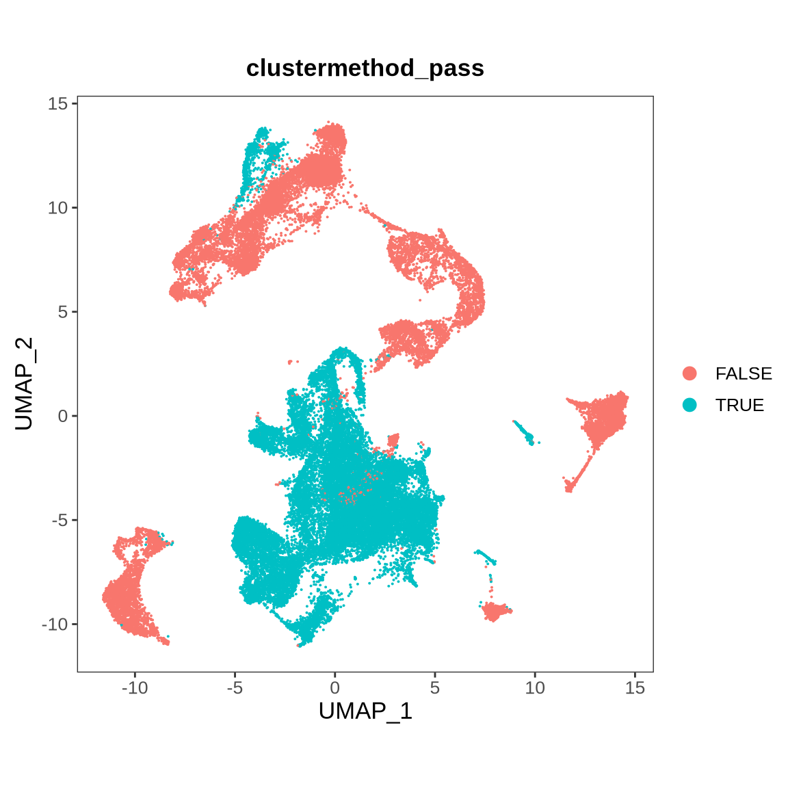
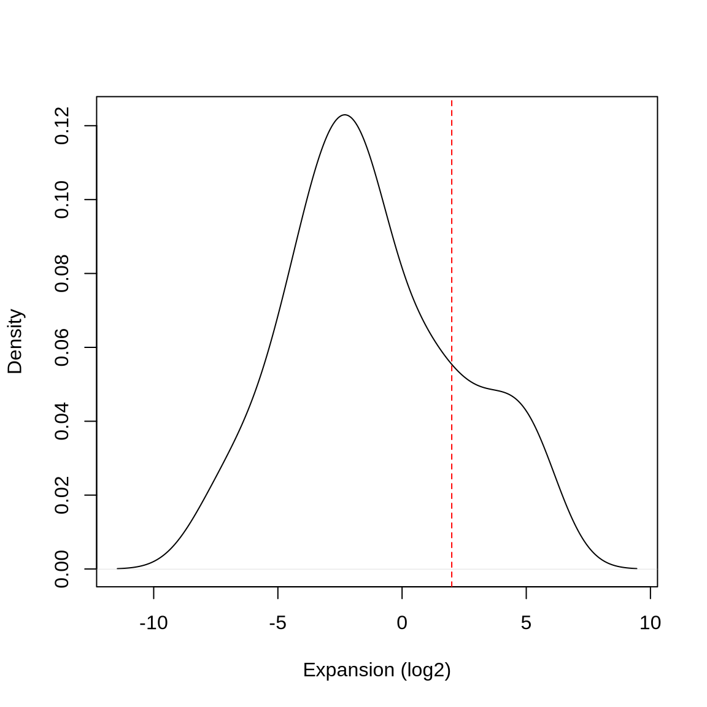
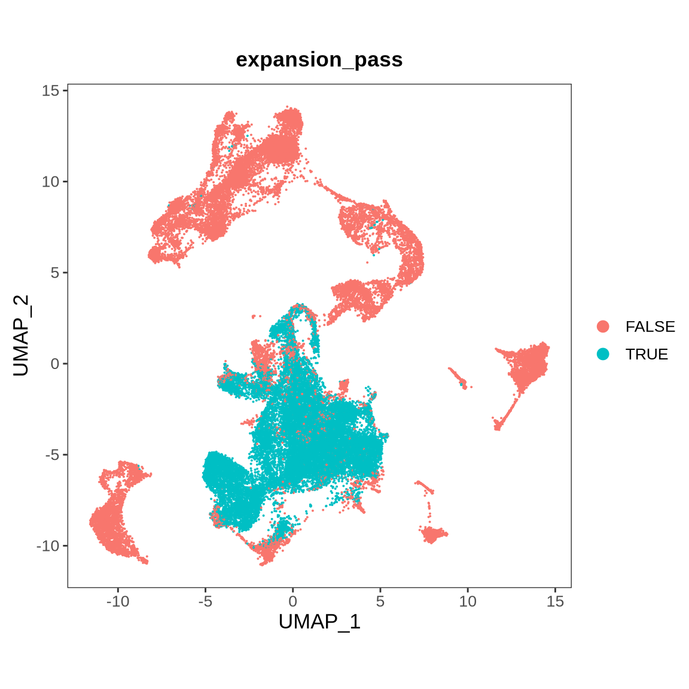
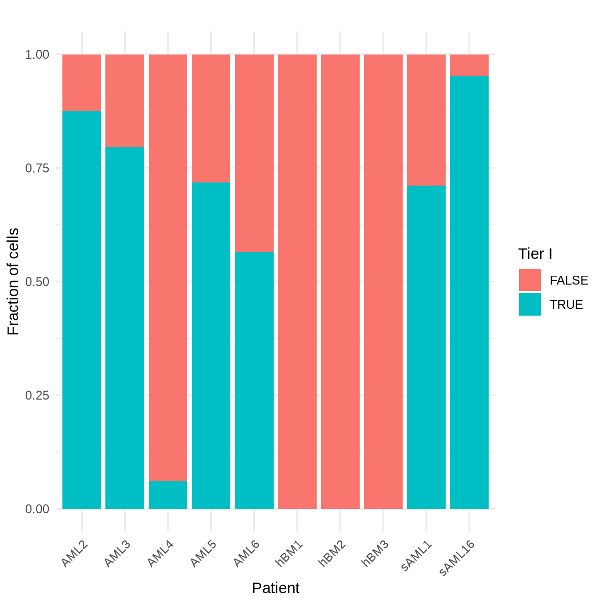
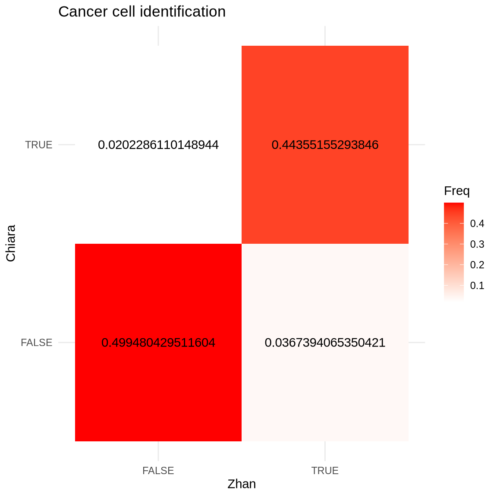

Last updated: 2024-10-18
Checks: 6 1
Knit directory: phenotype_genotype/
This reproducible R Markdown analysis was created with workflowr (version 1.7.1). The Checks tab describes the reproducibility checks that were applied when the results were created. The Past versions tab lists the development history.
Great! Since the R Markdown file has been committed to the Git repository, you know the exact version of the code that produced these results.
Great job! The global environment was empty. Objects defined in the global environment can affect the analysis in your R Markdown file in unknown ways. For reproduciblity it’s best to always run the code in an empty environment.
The command set.seed(20240315) was run prior to running
the code in the R Markdown file. Setting a seed ensures that any results
that rely on randomness, e.g. subsampling or permutations, are
reproducible.
Great job! Recording the operating system, R version, and package versions is critical for reproducibility.
Nice! There were no cached chunks for this analysis, so you can be confident that you successfully produced the results during this run.
Using absolute paths to the files within your workflowr project makes it difficult for you and others to run your code on a different machine. Change the absolute path(s) below to the suggested relative path(s) to make your code more reproducible.
| absolute | relative |
|---|---|
| /hpcnfs/scratch/P_DIMA_SCMSEQ/analysis/scrnaseq/phenotype_genotype/src/functions.R | src/functions.R |
| /hpcnfs/scratch/P_DIMA_SCMSEQ/analysis/scrnaseq/phenotype_genotype/data/final_seurat.rds | data/final_seurat.rds |
| /hpcnfs/scratch/P_DIMA_SCMSEQ/analysis/scrnaseq/phenotype_genotype/data/00_malignant_non_malignant_annotation.rds | data/00_malignant_non_malignant_annotation.rds |
Great! You are using Git for version control. Tracking code development and connecting the code version to the results is critical for reproducibility.
The results in this page were generated with repository version f70129f. See the Past versions tab to see a history of the changes made to the R Markdown and HTML files.
Note that you need to be careful to ensure that all relevant files for
the analysis have been committed to Git prior to generating the results
(you can use wflow_publish or
wflow_git_commit). workflowr only checks the R Markdown
file, but you know if there are other scripts or data files that it
depends on. Below is the status of the Git repository when the results
were generated:
Ignored files:
Ignored: .Rproj.user/
Ignored: data/
Ignored: src/
Untracked files:
Untracked: phenotype_genotype.Rproj
Note that any generated files, e.g. HTML, png, CSS, etc., are not included in this status report because it is ok for generated content to have uncommitted changes.
These are the previous versions of the repository in which changes were
made to the R Markdown
(analysis/00_malignant_non_malignant_annotations.Rmd) and
HTML (docs/00_malignant_non_malignant_annotations.html)
files. If you’ve configured a remote Git repository (see
?wflow_git_remote), click on the hyperlinks in the table
below to view the files as they were in that past version.
| File | Version | Author | Date | Message |
|---|---|---|---|---|
| Rmd | f70129f | Yinxiu Zhan | 2024-10-18 | Rebuild to associate with workflowr tracking |
| Rmd | 79c2d59 | Yinxiu Zhan | 2024-10-17 | :sparkles: Add malignant cell annotation |
| html | 79c2d59 | Yinxiu Zhan | 2024-10-17 | :sparkles: Add malignant cell annotation |
| Rmd | 7d264d7 | Yinxiu Zhan | 2024-10-15 | :sparkles: Test |
| html | 7d264d7 | Yinxiu Zhan | 2024-10-15 | :sparkles: Test |
The objective of this analysis is to conduct an exploratory data analysis on the Seurat object created by Chiara Caprioli. This object contains single-cell RNA sequencing (scRNA-seq) data from various samples, including AML2, AML3, AML4, AML5, AML6, hBM1, hBM2, hBM3, sAML1, and sAML16. The hBM1, hBM2, and hBM3 samples represent healthy donors, serving as controls, while the others are associated with different acute myeloid leukemia (AML) cases.
Information Contained in the Seurat Object: The Seurat object stores several layers of information, including gene expression data, metadata for each cell, and detailed cell type annotations based on the strategy from the Triana paper. Specifically, cell type annotations have been generated using various tools and methods for assigning and validating cell identities.
Cell Type Annotation Strategy (based on the strategy from the Triana Study): The following variables are present within the Seurat object:
lineage: This variable indicates the predicted cell lineage for each cell, as determined using scmap, a tool designed to project single-cell data onto a reference atlas of known cell types or states. This provides a reference-based classification of cell types.
lineage_similarity_score: This score is also derived from scmap and represents the degree of similarity between a cell and its predicted lineage in the reference atlas. It quantifies how confidently the cell can be matched to the reference cell types.
aggregated_ct: This represents manually curated, broader categories of cell types (check out the code first chunck).
singleR_label: The cell type labels are predicted using SingleR, an automated tool for cell type annotation. SingleR compares the expression profile of each cell to reference datasets and assigns the most likely cell type based on gene expression similarities.
singleR_score: This variable reflects the confidence score assigned by SingleR, indicating how closely the cell’s expression profile matches its predicted reference cell type.
Tools Used:
scmap: A reference-based method that projects single-cell RNA-seq data onto a predefined reference atlas. It helps assign cell types based on similarity to known cell populations.
SingleR: An automated tool that annotates cell types by comparing single-cell gene expression data to reference datasets. It uses the correlation between a cell’s gene expression profile and reference profiles to predict cell types.
These annotations, combined with the other data stored in the Seurat object, provide a comprehensive view of the scRNA-seq data, allowing for in-depth analysis and interpretation of cell types across the samples.
We have confirmed that doublets were successfully filtered out. The number of cells per sample ranges from 2,000 to nearly 6,000, as shown in the table below.
We evaluated data integration by analyzing the UMAP reduction and quantifying the proportion of each cell type across patients. As shown by both the UMAP visualization and the barplot quantification, T cells were enriched in the healthy bone marrow (hBM) samples, as expected. In contrast, AML patients exhibited variability in cell type distributions, with notable enrichment in early myeloid and HSC_MPP populations. Additionally, patient-specific differences were observed: sAML16 was enriched in monocytes, while AML4 had a higher proportion of Eo_baso_mast cells.

| Version | Author | Date |
|---|---|---|
| 79c2d59 | Yinxiu Zhan | 2024-10-17 |

| Version | Author | Date |
|---|---|---|
| 79c2d59 | Yinxiu Zhan | 2024-10-17 |
Next, we present the UMAP visualization color-coded by manually grouped lineages. The cell types most likely to contain cancer cells, specifically “Early_myeloid”, “HSC_MPP”, “Late_myeloid”, “Mono”, and “Eo_baso_mast”, Erythroid and MK, are primarily clustered in the lower region of the UMAP.

| Version | Author | Date |
|---|---|---|
| 79c2d59 | Yinxiu Zhan | 2024-10-17 |
To identify highly confident malignant cells, we focus on cell types known to be more likely to harbor malignancy, including “Early_myeloid”, “HSC_MPP”, “Late_myeloid”, “Mono”, “Eo_baso_mast”, “Erythroid”, and “MK”. We require that malignant cells be part of these predefined cell types based on aggregated annotations.
Next, we impose an additional criterion: malignant cells should cluster distinctly from healthy bone marrow cells. Specifically, we require that these cells belong to clusters predominantly composed of malignant cells, with an adjustable threshold for determining the degree of malignancy within a cluster. This ensures that the cells are not just grouped with normal cells but form distinct populations.
Finally, to strengthen the confidence in identifying malignant cells, we assess the relative expansion of each cell type within each patient compared to normal samples. Malignant cells should be expanded in AML patients compared to healthy controls, reinforcing the idea that their presence is abnormal.
Below, we present a bar plot showing the proportion of normal and malignant cells in each cluster, quantifying the fraction of each cell type per cluster.

| Version | Author | Date |
|---|---|---|
| 79c2d59 | Yinxiu Zhan | 2024-10-17 |
To determine which clusters to evaluate for malignant cell presence, we plotted the distribution of the fraction of healthy cells across all clusters. We set the threshold at 0.9, selecting clusters with a lower proportion of healthy cells for further assessment of malignancy.

| Version | Author | Date |
|---|---|---|
| 79c2d59 | Yinxiu Zhan | 2024-10-17 |
The UMAP visualisation below show the clusters to be considered for malignant cell presence

| Version | Author | Date |
|---|---|---|
| 79c2d59 | Yinxiu Zhan | 2024-10-17 |
To identify the malignant cell type, we analyzed the distribution of cell type expansions for the sample. The distribution showed a bimodal pattern. Based on this, we set a cutoff of a 4-fold expansion to define malignant cells.

| Version | Author | Date |
|---|---|---|
| 79c2d59 | Yinxiu Zhan | 2024-10-17 |

| Version | Author | Date |
|---|---|---|
| 79c2d59 | Yinxiu Zhan | 2024-10-17 |
Next, we require that all filters are met. Specifically, the cell must belong to one of the following categories: “Early_myeloid”, “HSC_MPP”, “Late_myeloid”, “Mono”, “Eo_baso_mast”, “Erythroid”, “MK”. Additionally, the cell must be part of a cluster enriched in malignant cells, and its cell type must show expansion.
Notably, removing the criterion for inclusion in a specific cell type and specific cluster results in an increase of only 0.8% in the total malignant cell population. The criteria that is the most stringent is the expansion criteria.
The UMAP visualization displays malignant cells, accompanied by a bar plot that quantifies the malignant cell fraction within each sample.
| Version | Author | Date |
|---|---|---|
| 79c2d59 | Yinxiu Zhan | 2024-10-17 |

| Version | Author | Date |
|---|---|---|
| 79c2d59 | Yinxiu Zhan | 2024-10-17 |
We then compared our definition of malignant cells with Tier I from Chiara Caprioli. As demonstrated in the heatmap below, the two definitions show a strong similarity.

| Version | Author | Date |
|---|---|---|
| 79c2d59 | Yinxiu Zhan | 2024-10-17 |
Below, we present a table highlighting the origins of the cells that show inconsistencies, whether from patient samples or cell lines.
R version 4.3.1 (2023-06-16)
Platform: x86_64-pc-linux-gnu (64-bit)
Running under: Ubuntu 22.04.3 LTS
Matrix products: default
BLAS: /usr/lib/x86_64-linux-gnu/openblas-pthread/libblas.so.3
LAPACK: /usr/lib/x86_64-linux-gnu/openblas-pthread/libopenblasp-r0.3.20.so; LAPACK version 3.10.0
locale:
[1] LC_CTYPE=en_US.UTF-8 LC_NUMERIC=C
[3] LC_TIME=en_US.UTF-8 LC_COLLATE=en_US.UTF-8
[5] LC_MONETARY=en_US.UTF-8 LC_MESSAGES=en_US.UTF-8
[7] LC_PAPER=en_US.UTF-8 LC_NAME=C
[9] LC_ADDRESS=C LC_TELEPHONE=C
[11] LC_MEASUREMENT=en_US.UTF-8 LC_IDENTIFICATION=C
time zone: Etc/UTC
tzcode source: system (glibc)
attached base packages:
[1] stats graphics grDevices utils datasets methods base
other attached packages:
[1] mclust_6.0.0 SeuratObject_4.1.3 Seurat_4.3.0.1 lubridate_1.9.2
[5] forcats_1.0.0 stringr_1.5.0 dplyr_1.1.3 purrr_1.0.2
[9] readr_2.1.4 tidyr_1.3.0 tibble_3.2.1 ggplot2_3.4.2
[13] tidyverse_2.0.0
loaded via a namespace (and not attached):
[1] RColorBrewer_1.1-3 rstudioapi_0.15.0 jsonlite_1.8.7
[4] magrittr_2.0.3 spatstat.utils_3.0-3 farver_2.1.1
[7] rmarkdown_2.24 fs_1.6.3 vctrs_0.6.3
[10] ROCR_1.0-11 spatstat.explore_3.2-3 htmltools_0.5.6
[13] sass_0.4.7 sctransform_0.3.5 parallelly_1.36.0
[16] KernSmooth_2.23-22 bslib_0.5.1 htmlwidgets_1.6.2
[19] ica_1.0-3 plyr_1.8.8 plotly_4.10.2
[22] zoo_1.8-12 cachem_1.0.8 whisker_0.4.1
[25] igraph_1.4.3 mime_0.12 lifecycle_1.0.3
[28] pkgconfig_2.0.3 Matrix_1.5-3 R6_2.5.1
[31] fastmap_1.1.1 fitdistrplus_1.1-11 future_1.33.0
[34] shiny_1.7.5 digest_0.6.33 colorspace_2.1-0
[37] patchwork_1.1.3 rprojroot_2.0.3 tensor_1.5
[40] irlba_2.3.5.1 crosstalk_1.2.0 labeling_0.4.3
[43] progressr_0.14.0 fansi_1.0.4 spatstat.sparse_3.0-2
[46] timechange_0.2.0 httr_1.4.7 polyclip_1.10-4
[49] abind_1.4-5 compiler_4.3.1 withr_2.5.0
[52] highr_0.10 MASS_7.3-60 tools_4.3.1
[55] lmtest_0.9-40 httpuv_1.6.11 future.apply_1.11.0
[58] goftest_1.2-3 glue_1.6.2 nlme_3.1-162
[61] promises_1.2.1 grid_4.3.1 Rtsne_0.16
[64] cluster_2.1.4 reshape2_1.4.4 generics_0.1.3
[67] gtable_0.3.4 spatstat.data_3.0-1 tzdb_0.4.0
[70] data.table_1.14.8 hms_1.1.3 sp_2.0-0
[73] utf8_1.2.3 spatstat.geom_3.2-5 RcppAnnoy_0.0.21
[76] ggrepel_0.9.3 RANN_2.6.1 pillar_1.9.0
[79] later_1.3.1 splines_4.3.1 lattice_0.21-8
[82] survival_3.5-5 deldir_1.0-9 tidyselect_1.2.0
[85] miniUI_0.1.1.1 pbapply_1.7-2 knitr_1.44
[88] git2r_0.32.0 gridExtra_2.3 scattermore_1.2
[91] xfun_0.40 matrixStats_1.0.0 DT_0.29
[94] stringi_1.7.12 workflowr_1.7.1 lazyeval_0.2.2
[97] yaml_2.3.7 evaluate_0.21 codetools_0.2-19
[100] cli_3.6.1 uwot_0.1.16 xtable_1.8-4
[103] reticulate_1.32.0 munsell_0.5.0 jquerylib_0.1.4
[106] Rcpp_1.0.11 globals_0.16.2 spatstat.random_3.1-6
[109] png_0.1-8 parallel_4.3.1 ellipsis_0.3.2
[112] listenv_0.9.0 viridisLite_0.4.2 scales_1.2.1
[115] ggridges_0.5.4 leiden_0.4.3 rlang_1.1.1
[118] cowplot_1.1.1